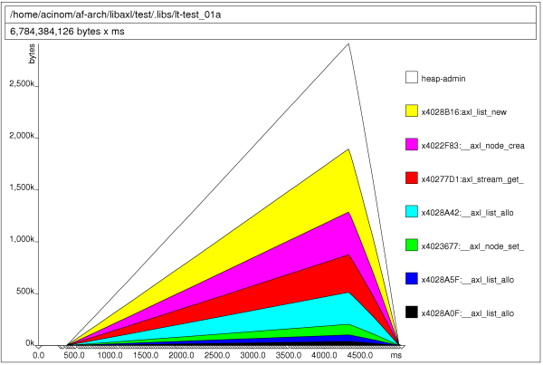

|
 Axl memory usage report for 0.3.0 release
Axl memory usage report for 0.3.0 release
1. Introduction
The following information was gathered through several modifications performed to the LibAxl library, using a machine with a Intel(R) Pentium(R) 4. This report covers the memory profile that the library has and compares that result with the LibXML library.
In also contains a brief about improvements done to the library to reduce its execution time, memory pairs allocation and memory usage, while supporting the same features.
It is in no way a complete library comparison at all, but provides some useful information about the motivations for building LibAxl library and how basic features compares to LibXML.
The implementation reference chosen was LibXML-2.0 (version 2.6.26) mainly because it was used by Af-Arch and Vortex Library.
To produce the memory profiling results showed in this report it was used the valgrind tool and its extension to profile heap allocation and memory performance, called massif. It was also used the callgrind tool which gives statistical performance information.
The test used for this memory usage report was the following for the case of Axl library results:
#include#include int main (int argc, char ** argv) { axlError ** error; /* top level definitions */ axlDoc * doc = NULL; /* initialize axl library */ if (! axl_init ()) { printf ("Unable to initialize Axl library\n"); return -1; } /* get current doc reference */ doc = axl_doc_parse_from_file ("large.xml", error); if (doc == NULL) return AXL_FALSE; /* cleanup axl library */ axl_end (); /* release the document */ axl_doc_free (doc); return AXL_TRUE; }
For the performance results get for the LibXML-2.0 library, the test code was:
#include#include int main (int argc, char ** argv) { xmlDocPtr doc; /* init libXml */ LIBXML_TEST_VERSION /* load the document */ doc = xmlParseFile ("large.xml"); if (doc == NULL) { printf ("Failed to load the xml document.\n"); return -1; } /* release memory */ xmlFreeDoc (doc); xmlCleanupParser(); return 0; }
The xml file used is a glade file definition that is 650K sized approx (found inside the test directory bundle with the source code: large.xml).
Test was run using the following command to get memory usage:
bash: ~$ valgrind --leak-check --show-reachable=yes ./test_file
The following command was used to get the memory profiling information for both libraries.
bash: ~$ valgrind --tool=massif ./test_file
Conventions used on this report to identify memory allocations, memory deallocations and total amount of memory used are the following:
(A) = allocations (number of request to the memory system) (F) = deallocations (number of times memory requested was returned) (T) = total amount of memory allocated (in bytes)
2. Initial status
Before starting we are going to remember previous performance state covered by the following report: for Axl Library 0.2.6, that shows the following data as initial status for memory consumption and runtime performance.
MEMORY CONSUMED BY AXL 0.2.6: LibAxl: (A) 106,208 (F) 106,208 (T) 1,513,687 LibXML: (A) 127,811 (F) 127,811 (T) 4,201,777
RUNTIME PERFORMANCE BY AXL 0.2.6: test_01a (axl): 0.077ms test_01b (xml): 0.047ms
3. Improve operations performed
This new release includes support for memory allocation factory, a simple implementation to alloc regions of memory that contains element for the same type (memory size), that are requested allocating bigger blocks, reducing the number of memory allocs and deallocs performed.
This technique not only improves program execution, but also reduce administrative memory used by the system to manage memory allocated by the program on the heap.
Previous Axl Library releases was suffering this problem: its allocation pattern was making the system to hold more memory to manage memory allocated by the application than the memory allocated by the application itself.
Looking at the following memory profiling result, for the Axl Library 0.2.1 release, it is clearly showed: the library was requiring less memory than the heap-admin required by the system to manage such memory:
In the next section it is showed the radical change performed due to introducing the factory memory allocation.
After doing changes described, we can say that Axl Library is now faster than LibXML, using the test reference described. Here are the result for the run time execution:
RUNTIME PERFORMANCE BY AXL 0.3.0: test_01a (axl): 0.043ms test_01b (xml): 0.050ms
4. Memory consumption
Memory allocation through the factory has improved the overall library performance, for its measured elements: allocations operations and memory heap admin used.
Here are the exceptional results that shows Axl Library execution against results obtained with LibXML.
MEMORY CONSUMED BY AXL 0.3.0: LibAxl: (A) 2,076 (F) 2,076 (T) 1,678,824 LibXML: (A) 127,811 (F) 127,811 (T) 4,201,777
Here is the memory profile (produced with massif) for the LibXML library:
And the memory profile for the Axl Library:
4. Conclusion
Conclusions are pretty clear: Axl Library has improved its memory allocation pattern, not only reducing its memory allocations requests, but also reducing its heap memory admin. This has also improved library efficient to make it, for the first time, faster than LibXML (around 14% faster).
At the same time, the library keeps on consuming around 2.5 times less than LibXML for the same document which makes it really memory efficient.
5. References
- Valgrind Homepage for this profiling tool and its extensions.
- LibXML LibXML homepage, tutorials, references and manuals.